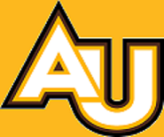

|  |
Robert M. Siegfried, Ph. D.Department of Mathematics and Computer ScienceAdelphi University, Garden City, NY 11530[Skip navigation] |
LinksThe Molly Project is an attempt to provide software tools to make it easier for the Blind and Visually Impaired to program in a Windows environment. The project is named for Molly Siegfried Lind, my great-aunt who lost her sight to glaucoma and struggled to regain her independence. The first tool is a prototype compiler for a scripting language that creates Visual BASIC forms. You can download the compiler for Visual Basic version 6 or the compiler for Visual Basic.NET . Click here to download the manual. |